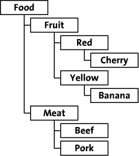
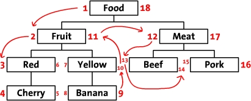
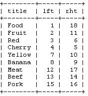

CREATE TABLE `article_cat` (
`article_cat_id` smallint(5) unsigned NOT NULL auto_increment,
`name` varchar(50) NOT NULL,
`lft` smallint(5) unsigned NOT NULL,
`rht` smallint(5) unsigned NOT NULL,
`lvl` tinyint(3) unsigned NOT NULL,
PRIMARY KEY (`article_cat_id`)
) ENGINE=MyISAM DEFAULT CHARSET=utf8 COMMENT='文章类别表';
INSERT INTO `article_cat` VALUES (1, '虚根分类', 1, 2, 0);
在这里我们以改进的前序遍历树为模型来设计文章类别的数据存储格式。
同时，为了增强改进的前序遍历树模型的数据存取能力和表现能力，我们在数据库中增加 '树层级(lvl)' 字段和 '虚根分类' 数据记录：
'树层级(lvl)' 字段：方便获取层级的数据记录。
'虚根分类' 数据记录：可以模拟创建多个根节点的树。
以一个在线食品店树形图的例，参见下图

现在我们把上图中的树按照水平方式摆开。从根节点开始（"Food"），然后他的左边写上1。再按照树的顺序（从上到下）给"Fruit"的左边写上2。这样，你沿着树的边界走啊走（这就是"遍历"），然后同时在每个节点的左边和右边写上数字。最后，我们回到了根节点"Food"在右边写上18。下面是标上了数字的树，同时把遍历的顺序用箭头标出来了。

我们称这些数字为左值和右值（如，"Food"的左值是1，右值是18）。正如你所见，这些数字按时了每个节点之间的关系。因为"Red"有3和6两个值，所以，它是有拥有1-18值的"Food"节点的后续。同样的，我们可以推断所有左值大于2并且右值小于11的节点，都是有2-11的"Fruit" 节点的后续。这样，树的结构就通过左值和右值储存下来了。这种数遍整棵树算节点的方法叫做"改进前序遍历树"算法。
